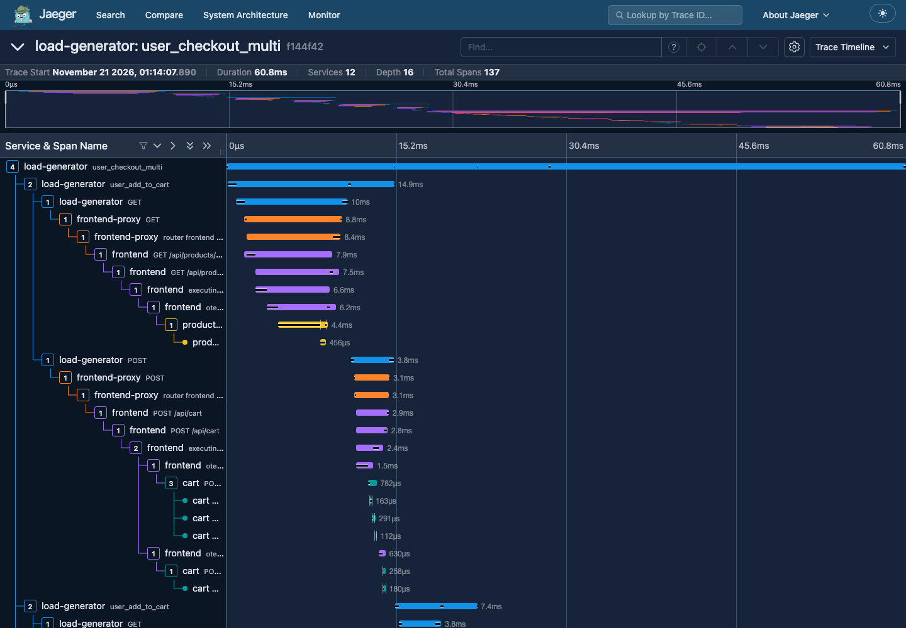
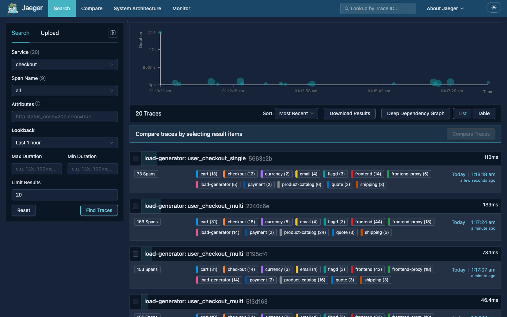
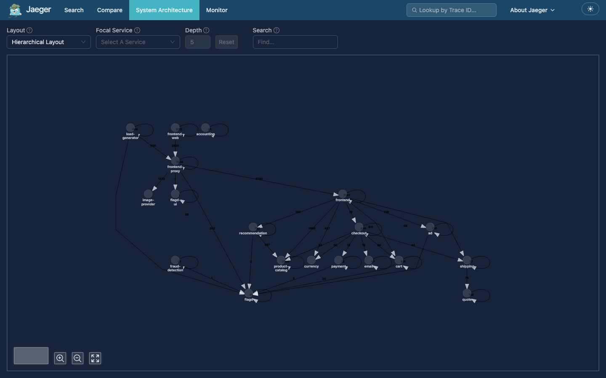
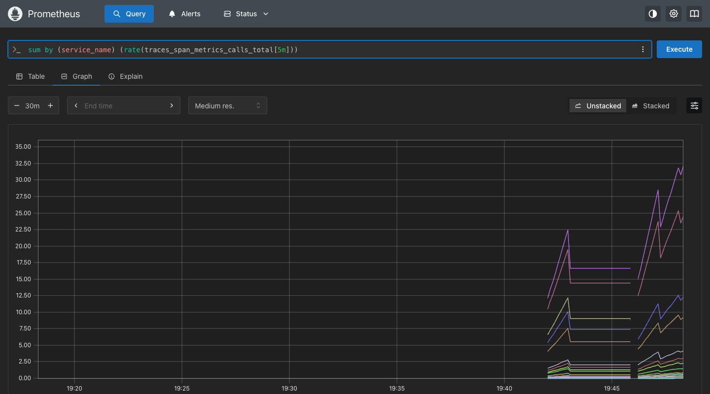
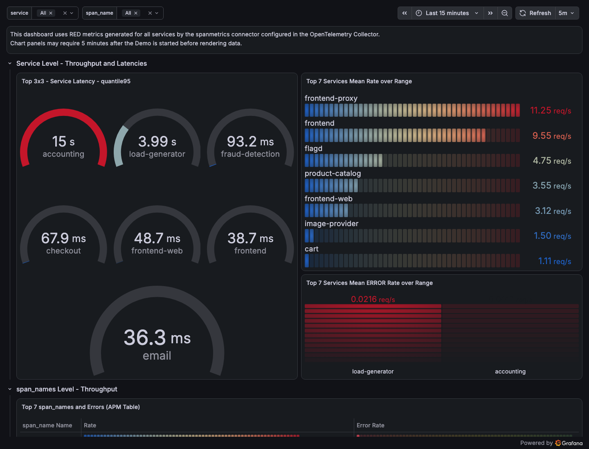
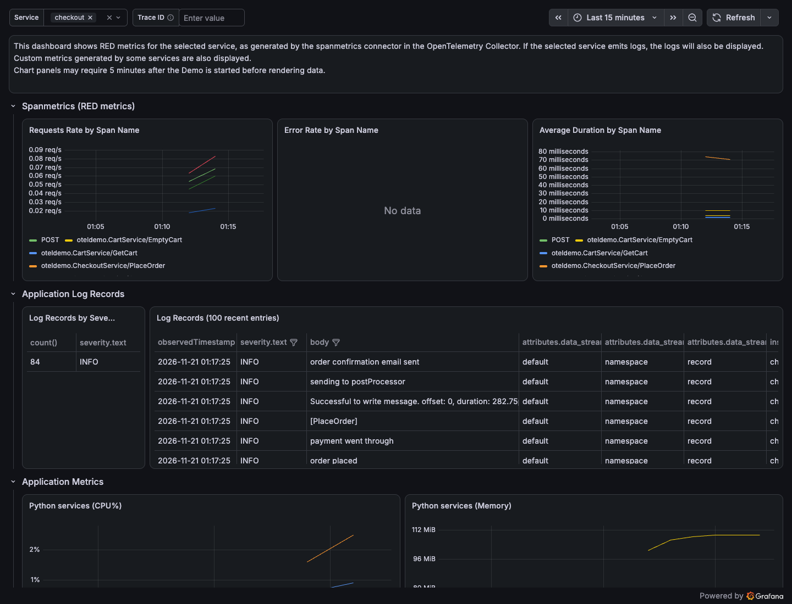
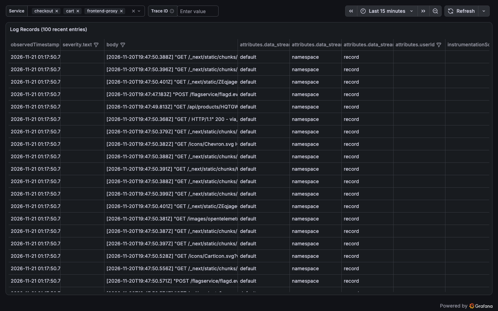
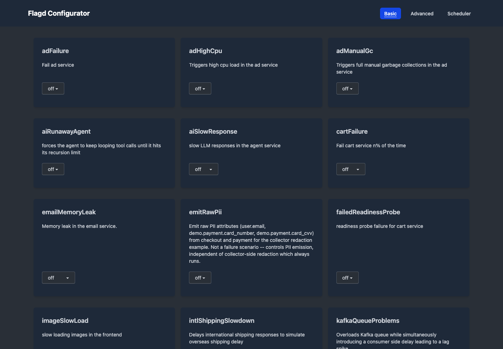
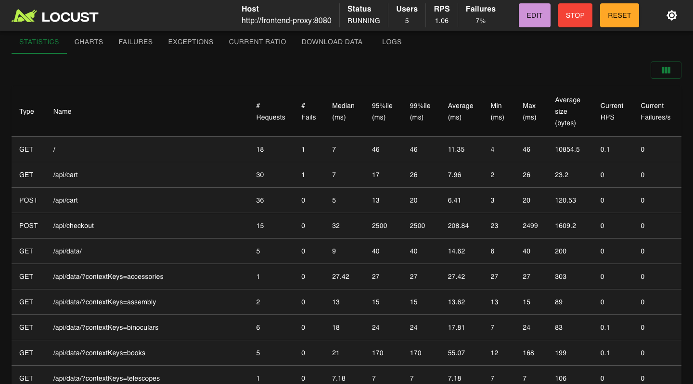

| Date completed | 21 November 2026 |
| Demo release | open-telemetry/opentelemetry-demo 3.1.0 (code tag and image tag pinned) |
| Host | MacBook, Apple M4 (arm64), 16 GB RAM, macOS (Darwin 25.6.0) |
| Container runtime | Docker Desktop 4.83.0 · Engine 29.6.2 · Compose v5.3.1 · 10 GB RAM to Docker |
| Project root | ~/Desktop/Incident-response-copilot/ |
| Result | 28 / 28 containers running · all three telemetry signals verified end-to-end |
The Incident Response Copilot is a multi-agent AI system that will detect, investigate and help diagnose failures in a microservices application, using only the application's telemetry, the same evidence a human on-call engineer would use.
To build and test it we need a realistic system that (a) has many interacting services, (b) is fully instrumented, and (c) can be broken on demand in known ways. The OpenTelemetry Demo ("Astronomy Shop") meets all three.
Phase 0 objectives (no AI or detection logic yet):
| Step | Outcome (verified) |
|---|---|
| Environment check | Git 2.54.0, Docker 29.6.2, Compose v5.3.1 present. Docker daemon was not running at first; started Docker Desktop and raised its memory from 7.8 GB to 10 GB. |
| Clone the demo | Shallow clone of tag 3.1.0 into opentelemetry-demo/. |
| Pin image versions | .env had DEMO_VERSION=latest; we set DEMO_VERSION=3.1.0 in .env.override so the images match the code. |
| Fix image downloads | All pulls failed with TLS handshake timeout. Root cause: the college network's proxy auto-config (WPAD/PAC) is broken for Docker Desktop. Fixed by configuring Docker Desktop's proxy manually (§13). |
| Start the stack | 28 images (3.80 GB) pulled; make start exit 0; 28/28 containers running, 0 restarts, 0 OOM kills. |
| Verify UIs | Shop, Jaeger, Grafana, Load generator, Feature-flag UI and Telemetry docs return HTTP 200 via :8080; Prometheus ready on :9090. |
| Verify telemetry | Traces from 20 services in Jaeger; 23 metric jobs / 5,523 series in Prometheus; logs from 17 services in OpenSearch. |
| Fix log loss | Found the Collector dropping logs (OpenSearch mapper_parsing_exception). Fixed with a Collector transform processor in otelcol-config-extras.yml (§13). |
| Feature-flag analysis | 18 flags catalogued; proved from a live trace that flag keys and variants leak into telemetry; designed the isolation boundary for Phase 1. |
The OpenTelemetry Demo is the official reference application of the OpenTelemetry project: an online telescope shop split into about 15 services written in 10+ languages (Go, C#, Java, Kotlin, Python, Node.js/TypeScript, Ruby, PHP, Rust, C++, Elixir), each instrumented with OpenTelemetry. It includes a load generator that simulates shoppers around the clock, a Kafka-based asynchronous path, two data stores, a feature-flag service for fault injection, and a complete observability stack.
payment fails, users see errors at frontend and checkout. The symptom shows up far from the cause, and finding the cause is exactly what our copilot must learn to do.| Concept | Meaning | Example from our setup |
|---|---|---|
| Image | Read-only, versioned package: filesystem + app + runtime. | ghcr.io/open-telemetry/demo:3.1.0-cart already contains .NET; we never installed .NET. |
| Container | A running, isolated process created from an image. | The cart container. |
| Registry | Server that stores images. | ghcr.io, quay.io, Docker Hub. |
| Multi-arch image | One tag, several CPU builds. | Docker pulled arm64 variants for the M4 automatically. |
| Daemon vs client | docker CLI is a client; dockerd does the work. On macOS it runs inside a Linux VM managed by Docker Desktop. | docker --version worked while docker info failed: client present, daemon not running. |
| Network + DNS | Compose creates a private bridge network; containers reach each other by service name. | checkout calls cart:7070, never localhost. |
| Port publishing | "8080:8080" maps host→container. A bare "9200" publishes to a random host port. | Only 8080, 10000 and 9090 are fixed; OpenSearch was on localhost:57777 this run. |
| Bind mount | Host file or folder mounted into a container. | src/flagd/ mounted into both flagd and flagd-ui. |
| Healthcheck / depends_on | Container health tests; start order can wait for healthy, not just started. | Kafka consumers show Waiting until Kafka is healthy. |
| Restart policy | unless-stopped restarts containers after crashes and daemon restarts. | After the Mac slept, containers came back on their own. |
| Resource limits | Memory ceiling per container; exceeding it means an OOM kill (exit 137). | Sum of limits = 7.71 GB, which is why Docker got 10 GB. |
| Compose layering | Several -f files merged in order; later files add or override. | core + full + observability + extras = 28 services. |
| Env files | --env-file supplies variables; later files win. | .env then .env.override. |
docker compose config --services)| File | Adds | Count |
|---|---|---|
compose.yaml | Shop services, otel-collector, flagd, flagd-ui, valkey-cart, astronomy-db, load-generator, frontend-proxy, telemetry-docs | 20 |
compose.full.yaml | kafka, accounting, fraud-detection | +3 |
compose.observability.yaml + compose.extras.yaml | jaeger, prometheus, grafana, opensearch, opamp-server | +5 |
compose.agent.yaml (not used) | agent, chatbot, mcp (the demo's own AI add-on, needs an LLM API key) | +3 |
# 1. Check tools (read-only)
git --version # git version 2.54.0 (Apple Git-157)
docker --version # Docker version 29.6.2
docker compose version # Docker Compose version v5.3.1
docker info # first run: "failed to connect to the docker API ... docker.sock"
# -> started Docker Desktop, set Memory = 10 GB
# 2. Find the latest release and clone it (shallow, pinned)
git ls-remote --tags --refs https://github.com/open-telemetry/opentelemetry-demo.git
git clone --branch 3.1.0 --depth 1 https://github.com/open-telemetry/opentelemetry-demo.git opentelemetry-demo
# 3. Pin image tags to the same release (appended to opentelemetry-demo/.env.override)
DEMO_VERSION=3.1.0
# 4. Pre-pull images with limited parallelism, then start
COMPOSE_PARALLEL_LIMIT=4 docker compose --env-file .env --env-file .env.override \
-f compose.yaml -f compose.full.yaml -f compose.observability.yaml -f compose.extras.yaml pull
make startmake start expands to:
docker compose --env-file .env --env-file .env.override \
-f compose.yaml -f compose.full.yaml -f compose.observability.yaml -f compose.extras.yaml \
up --force-recreate --remove-orphans --detachup: create the network and containers and start them (pulling any missing images).--force-recreate: recreate containers even if nothing changed, for a clean state.--remove-orphans: delete containers from services no longer defined.--detach: run in the background.DEMO_VERSION=3.1.0 means the configs on disk and the running images are the same release, and every command in this document stays reproducible.DB_CONNECTION_STRING, VALKEY_ADDR, KAFKA_ADDR).| Service | Language / tech | Role |
|---|---|---|
| frontend-proxy | Envoy | Single entry point on localhost:8080; routes the shop and all observability UIs. |
| frontend | TypeScript, Next.js | Web UI and API gateway; fans out to backend services over gRPC/HTTP. |
| product-catalog | Go | Product list, stored in PostgreSQL (astronomy-db). |
| cart | C# (.NET) | Shopping cart, stored in valkey-cart. |
| checkout | Go | Orchestrates an order: cart, currency, product-catalog, shipping, payment, email; publishes to Kafka. |
| currency | C++ | Currency conversion. |
| payment | Node.js | Charges the (fake) card. |
| shipping → quote | Rust → PHP | Shipping cost; shipping calls quote. |
| Ruby | Order confirmation. | |
| recommendation | Python | Product recommendations (calls product-catalog). |
| ad | Java | Contextual ads. |
| image-provider | nginx | Static product images. |
| kafka → accounting, fraud-detection | Kafka; C#; Kotlin | Asynchronous order processing; accounting also writes to PostgreSQL. |
| load-generator | Python, Locust | Constant simulated traffic (5 users, ~1 req/s) so telemetry always exists. |
| flagd, flagd-ui | Go; Elixir | Feature-flag server and editor, used for fault injection (§12). |
| otel-collector | Collector-contrib 0.159.0 | Receives, processes and routes all telemetry. |
| jaeger / prometheus / opensearch / grafana | 2.19.0 / v3.13.1 / 3.7.0 / 13.1.0 | Trace store / metrics store / log store / dashboards. |
| opamp-server | OpAMP | Remote management channel for the Collector (it reports its effective config and health). |
| telemetry-docs | Weaver + nginx | Generated documentation of the demo's telemetry schema (/telemetry/). |
OpenTelemetry (OTel) is a vendor-neutral standard and set of SDKs for producing telemetry. Each service uses an OTel SDK in its own language. Instrumentation libraries create spans, metrics and logs automatically for gRPC, HTTP, Kafka, SQL and similar, and developers add custom ones (e.g. app.cart.items.count). Everything is sent using the same wire protocol, OTLP, to the OpenTelemetry Collector.
The Collector is a pipeline engine with four kinds of components:
otlp on 4317 gRPC / 4318 HTTP; pull: docker_stats, host_metrics, redis, postgresql, nginx, kafkametrics, http_check).span_metrics turns every span into RED metrics (Rate, Errors, Duration).otelcol-config.yml, -full.yml, -observability.yml, -extras.yml). The base file exports only to debug; the observability overlay adds the real exporters.user_checkout_multi) and posts /api/checkout to Envoy with a W3C traceparent header; every hop passes it downstream.otel-collector:4317/4318, along with metrics (counters, histograms) and logs. Logs carry the trace ID, so they can be correlated./api/v1/otlp, logs → OpenSearch./metrics endpoints. In this release the Collector pushes metrics to Prometheus's built-in OTLP receiver (--web.enable-otlp-receiver). Prometheus converts service.namespace/service.name into the job label, e.g. job="opentelemetry-demo/checkout".| Metrics | Logs | Traces | |
|---|---|---|---|
| What | Numbers aggregated over time | Timestamped text or structured events | A request's path through services, as a tree of timed spans |
| Answers | Is something wrong? How much? | What exactly happened? | Where in the call chain, and why is it slow? |
| Cost | Cheap; fixed size per series | Expensive; one record per event | Expensive; often sampled |
| Real example from this run | traces_span_metrics_calls_total: frontend-proxy at 11.25 req/s (Figure 6) | checkout: "payment went through", "order confirmation email sent" (Figure 8) | Trace f144f42b…: 137 spans, 12 services, 60.8 ms (Figure 4) |
| Backend here | Prometheus | OpenSearch | Jaeger |
How an investigation uses all three: a metric alert says checkout error rate rose → traces show the failing span is PaymentService/Charge → that span's trace ID finds the matching payment logs with the exact error. Our copilot will follow this same metrics → traces → logs path.
Receives OTLP from the Collector and stores traces in memory (memory_backend, capped by MEMORY_MAX_TRACES), so traces are lost when Jaeger restarts. The UI is served under /jaeger/ui. System Architecture derives a service graph from observed spans.

user_checkout_multi): 12 services, depth 16, 137 spans, 60.8 ms. Envoy (orange), frontend (purple) and cart (teal) spans nest under the load-generator root.
service=checkout, last hour. Each row is one trace with per-service span counts. The scatter plot shows durations; the outlier near 2.5 s is visible here.
flagd appears as a dependency of many services.Receives pushed OTLP metrics, stores them in its TSDB for 7 days (--storage.tsdb.retention.time=7d), and is queried with PromQL. It is published on the fixed port 9090. During this run it held 479 metric names, 5,523 series, 23 jobs.

sum by (service_name) (rate(traces_span_metrics_calls_total[5m])): requests per second per service, derived from spans. The gap near 19:46 UTC is our own Collector restart while fixing the log pipeline (§13).The Collector's opensearch exporter writes logs to a daily index otel-logs-yyyy-MM-dd. Fields are mapped dynamically, which is the source of the conflict we fixed in §13. Port 9200 is published only to a random host port, so the reliable way in is from inside the container: docker exec opensearch curl ….
Anonymous viewer access is enabled; it's served at /grafana/. Three provisioned datasources: Prometheus (webstore-metrics), Jaeger (webstore-traces), OpenSearch (webstore-logs, PPL queries). Ten provisioned dashboards: Demo Dashboard, Spanmetrics Demo Dashboard, APM Dashboard, OpenTelemetry Collector, Self-Observability, Linux, PostgreSQL, NGINX Metrics, Cart Service Exemplars, Events by Name.


checkout: RED metrics (Prometheus) and log records (OpenSearch) side by side. "No data" under Error Rate is correct: checkout had no errors.
| Interface | URL | Use |
|---|---|---|
| Shop | http://localhost:8080/ | Generate your own traffic. |
| Jaeger UI | http://localhost:8080/jaeger/ui/ | Search traces, view waterfalls, service graph. |
| Grafana | http://localhost:8080/grafana/ | Dashboards; Explore for ad-hoc queries. |
| Prometheus | http://localhost:9090/ | PromQL queries and graphs. |
| Load generator | http://localhost:8080/loadgen/ | Traffic stats; change users / stop load. |
| Feature flags | http://localhost:8080/feature/ | Fault injection (humans only, §12). |
| Telemetry docs | http://localhost:8080/telemetry/ | Generated docs for the telemetry schema. |
curl -s --noproxy '*' http://localhost:8080/jaeger/ui/api/services
# -> 20 services: accounting, ad, cart, checkout, currency, email, flagd, flagd-ui, fraud-detection,
# frontend, frontend-proxy, frontend-web, image-provider, load-generator, payment,
# product-catalog, quote, recommendation, shipping, telemetry-docs
curl -s --noproxy '*' 'http://localhost:8080/jaeger/ui/api/traces?service=checkout&operation=oteldemo.CheckoutService/PlaceOrder&limit=5&lookback=1h'
curl -s --noproxy '*' 'http://localhost:8080/jaeger/ui/api/dependencies?endTs=&lookback=3600000' # series count per job (how we confirmed 23 services report metrics)
count by (job) ({job!=""})
# request rate per service from span metrics; use [5m], not [1m] (see §13)
sum by (service_name) (rate(traces_span_metrics_calls_total[5m]))
# p95 latency per service
histogram_quantile(0.95, sum by (le, service_name) (rate(traces_span_metrics_duration_milliseconds_bucket[5m])))
# via the HTTP API
curl -s --noproxy '*' http://localhost:9090/api/v1/query --data-urlencode 'query=count by (job) ({job!=""})'docker exec opensearch curl -s 'http://localhost:9200/_cat/indices/otel-logs-*?h=index,docs.count'
# logs per service: aggregate on the KEYWORD sub-field (text fields can't be aggregated)
docker exec opensearch curl -s 'http://localhost:9200/otel-logs-*/_search?size=0' \
-H 'Content-Type: application/json' \
-d '{"aggs":{"s":{"terms":{"field":"resource.service.name.keyword","size":40}}}}'In Grafana: Explore → OpenSearch, query type PPL, e.g. search source=otel-logs-* | where resource.service.name = 'checkout' | sort - observedTimestamp | head 100 (the same query the Demo Dashboard uses).
Run from opentelemetry-demo/. To avoid retyping the long Compose prefix, define a shell function (it works in zsh and bash):
dc() { docker compose --env-file .env --env-file .env.override \
-f compose.yaml -f compose.full.yaml -f compose.observability.yaml -f compose.extras.yaml "$@"; }| Command | What it does |
|---|---|
make start | Start all 28 services (detached, force-recreate). Used. |
make stop | Runs down --remove-orphans --volumes: removes containers, network and data volumes. Not run in Phase 0. |
dc stop / dc start | Pause and resume without deleting containers or data. |
dc ps -a | State and health of every container. Used. |
dc logs -f --tail 100 checkout | Follow one service's container stdout/stderr. |
docker logs --since 10m otel-collector | Recent Collector logs; how we found the OpenSearch errors. Used. |
docker stats --no-stream | CPU and memory per container vs its limit. Used (4.0 GB total). |
docker inspect <c> --format '{{.RestartCount}} {{.State.OOMKilled}}' | Detect crash loops and OOM kills. Used (all 0 / false). |
dc restart otel-collector | Restart one service, e.g. after a config change. Used. |
dc run --rm --no-deps -T otel-collector validate --config=… | Validate Collector config before restarting. Used. |
dc config --services / --images | Show the merged service list and images without starting anything. Used. |
dc port opensearch 9200 | Show which random host port a container port got. |
docker system df | Disk used by images, containers and volumes. |
A feature flag is a runtime switch that code checks on every request. The demo uses OpenFeature SDKs in each service, backed by flagd. Flags live in src/flagd/demo.flagd.json, which is bind-mounted into both flagd (reads and watches it) and flagd-ui (writes it). Changing a flag in the UI changes behaviour live, with no restart.

/feature/, all flags off (default).| Flag | Variants | Fault injected |
|---|---|---|
| paymentFailure | off, 10–100% | Fail payment charge requests n% of the time |
| paymentUnreachable | off/on | Payment service unavailable |
| cartFailure | off, 10–100% | Fail cart service n% of the time |
| productCatalogFailure | off/on | Fail product catalog on a specific product |
| productCatalogLockContention | off/on | Lock contention in the catalog database |
| adFailure / adHighCpu / adManualGc | off/on | Ad errors / high CPU / full GC pauses |
| emailMemoryLeak | off, 1x–10000x | Memory leak in email |
| recommendationCacheFailure | off/on | Recommendation cache leak |
| kafkaQueueProblems | off/on | Kafka overload + consumer delay (lag spike) |
| imageSlowLoad / intlShippingSlowdown | off, 5sec, 10sec | Slow images / slow international shipping |
| failedReadinessProbe | off/on | Cart readiness probe fails |
| loadGeneratorFloodHomepage | off/on | Flood the frontend with requests |
| aiRunawayAgent, aiSlowResponse, emitRawPii | — | Agent-layer and PII-redaction demos; not failure scenarios for us |
A human, or a separate "chaos" script that is not part of the copilot, flips a flag in /feature/ (or edits the JSON). The copilot must then detect and diagnose the incident from telemetry alone, and we compare its diagnosis with the flag that was actually set (the ground truth).
f144f42b8b2aa45a09e61b80bb3f6044 we found:
feature_flag.evaluation span events in checkout (keys paymentUnreachable, kafkaQueueProblems, emitRawPii), cart (cartFailure) and product-catalog (productCatalogFailure, 9×), each with variant=off.feature_flag.key, feature_flag.result.variant.otelhooks.NewTracesHook()), recommendation and load-generator (Python TracingHook); MetricsHook + TraceEnricherHook in cart; a shipping.feature_flag.evaluated log event in shipping; span attribute demo.feature_flag.recommendation_cache in recommendation. If paymentFailure were set to 50%, traces would literally contain variant=50%.feature_flag.*, demo.feature_flag.*, shipping.feature_flag.*; drop all telemetry whose service.name is flagd or flagd-ui; drop spans that call the flagd evaluation API./feature/, flagd's ports (8013/8016, which this run also published on random host ports), src/flagd/demo.flagd.json, the repository, or the Docker socket.ENCOUNTERED All of these happened during this phase, in this order.
| Symptom | Root cause | Fix |
|---|---|---|
failed to connect to the docker API at unix:///…/docker.sock | Docker Desktop (the daemon in its VM) wasn't running; only the CLI was. | Start Docker Desktop and wait for "Engine running". |
| Sum of container memory limits (7.71 GB) ≈ Docker memory (7.8 GB) | Default Docker Desktop allocation is too small for the full stack. | Settings → Resources → Memory = 10 GB. |
Images would be latest-* though we cloned 3.1.0 | .env sets DEMO_VERSION=latest. | DEMO_VERSION=3.1.0 in .env.override. |
net/http: TLS handshake timeout on every registry (ghcr.io, quay.io, Docker Hub); 0/28 images | College network: macOS uses proxy 172.31.2.3:8080 with PAC http://wpad/wpad.dat, but that URL returns an HTML filter page. Docker's proxy log showed evaluating PAC file … lookup wpad: no such host, then a fallback to direct connections that stall on this network. | Docker Desktop → Resources → Proxies → manual: HTTP/HTTPS http://172.31.2.3:8080, bypass localhost,127.0.0.1,*.local,10.0.0.0/8,192.168.0.0/16,172.16.0.0/12. Handshakes dropped from a 72 s stall to 0.4 s. Turn this off on other networks. |
| Compose showed most pulls as "Interrupted"; first background task reported exit 0 | Compose aborts all pulls after the first failure; the exit 0 belonged to a trailing echo. | Always check the real exit code; pull separately with COMPOSE_PARALLEL_LIMIT=4 and retries. |
Shell loops failed (unknown flag, command not found) | zsh does not word-split unquoted $VAR like bash. | Use bash arrays, shell functions, or while read loops. |
Collector: kafkametrics … connection refused | Collector scraped Kafka before Kafka was listening. | None needed: transient; stopped once Kafka was healthy. |
Collector: Exporting failed. Dropping data from opensearch, about 26/min:mapper_parsing_exception: Existing mapping for [attributes.http] must be of type object but found [text] | cart's .NET log template "Overriding HTTP_PORTS '{http}' …" emits attribute http="8080". As the day's first such doc it fixed attributes.http as text, so every later log with http.request.method (an object path) was rejected. | Added transform/avoid_mapping_conflicts in otelcol-config-extras.yml: rename root-level string attributes named http, url, server, client, network, error to <name>_value. Validated, restarted the Collector, deleted the mis-mapped day index. Result: 0 export errors; 3,524 logs from 17 services in 90 s. |
PromQL rate(…[1m]) returned no data | Metrics arrive about once a minute; rate() needs ≥ 2 samples in the window. | Use a window of at least 2–4× the interval: [5m]. |
Prometheus had a service_name label for only one service | OTLP ingestion puts identity in job (= namespace/name); service_name is set only on some series (e.g. span metrics). | Filter by job for general metrics. |
| OpenSearch aggregation error: "Text fields are not optimised…" | Aggregated on a text field. | Use the .keyword sub-field. |
| Headless screenshots: Grafana "Error loading: timeseries", blank Jaeger graph | --virtual-time-budget breaks lazy-loaded JavaScript; nothing was wrong with the services. | Use a browser driver (puppeteer-core) with real waits. |
src/otel-collector/otelcol-config-extras.yml)processors:
transform/avoid_mapping_conflicts:
error_mode: ignore
log_statements:
- context: log
statements:
- set(log.attributes["http_value"], log.attributes["http"]) where IsString(log.attributes["http"])
- delete_key(log.attributes, "http") where IsString(log.attributes["http"])
# ... same pair for url, server, client, network, error
service:
pipelines:
logs:
# arrays are REPLACED when config files merge, so repeat upstream processors first
processors: [resource_detection, memory_limiter, transform/sanitize_logs, transform/avoid_mapping_conflicts]GENERAL Not encountered in this run, but likely with this stack.
| Symptom | Cause → fix |
|---|---|
Container Exited (137), OOMKilled=true | Hit its memory limit or Docker ran out → raise Docker memory; check docker stats. Kafka sits near its 620 MB limit by design (fixed 400 MB heap). |
Bind for 0.0.0.0:8080 failed: port is already allocated | Another process uses 8080 → lsof -nP -iTCP:8080 -sTCP:LISTEN, stop it, or change ENVOY_PORT in .env.override. |
toomanyrequests from Docker Hub | Anonymous pull rate limit, shared by a whole campus IP → docker login. |
| Pull fails with HTML / 403 | Network web filter blocking a registry → ask IT or use another network to pull once. |
| Pulls fail after moving to home Wi-Fi | Docker still points at the college proxy → switch Proxies back to "system". |
no space left on device | Images and volumes fill the VM disk → docker system df, docker image prune. |
| Dashboards empty right after start | Rate windows need data → wait about 5 minutes (the dashboards say so too). |
curl localhost hangs behind a proxy | curl sent localhost traffic to http_proxy → use --noproxy '*' (all commands here do). |
| Traces missing after a restart | Jaeger stores traces in memory → expected; generate new traffic. |
POST /prompt → gaierror: Name or service not known: the load generator's hard-coded chatbot task (weight 3) targets agent:8010, which exists only in compose.agent.yaml (not deployed). Two were Connection refused while frontend-proxy started. The copilot must treat these as known noise, not incidents.:8080, :9090, or docker exec.kafkaQueueProblems flag.-full Collector overlay replaces the metrics receiver list and omits prometheus/ad, so the ad service's Prometheus-format endpoint isn't scraped (ad still exports via OTLP).auth.anonymous.org_role is deprecated, alert "Error in expanding template"); the Collector warns that kafkametrics is a deprecated alias. These are harmless.make start report 17,433 s; containers recovered through their restart policy.RestartCount=1). It has been stable since. Cause not determined; watch for recurrence.SMTP not configured every 5 minutes: a provisioned alert rule tries to email and no mail server is set up. This is upstream noise.
/loadgen/: 5 users, ~1 req/s, ~7% failures with all flags off. Most of these are the /prompt chatbot calls to a service we did not deploy.PaymentService/Charge. Logs: payment logged "charge failed: …" with the same trace ID. Metrics detect, traces localize, logs explain.span_metrics consumes traces and emits RED metrics.traceparent header (trace ID, parent span ID, flags) into the outgoing request; the callee extracts it and creates child spans under the same trace ID. Kafka propagates it in message headers, which is how the async consumers join the trace.docker_stats/host_metrics give USE./metrics. Here the Collector pushes OTLP to Prometheus's OTLP receiver. Pull makes target health visible; push suits short-lived jobs and centralised pipelines.rate(x[1m]) return nothing?rate() needs at least two samples inside the range window. With roughly 60 s between samples, a 1-minute window often holds one. The rule of thumb is a window ≥ 4× the sample interval.attributes.http is first seen as a string, later docs where http must be an object (http.request.method) are rejected. Fixes: normalise data before indexing (what we did), use explicit index templates, or flatten attributes.latest changes under you. We pinned the code tag (3.1.0) and the image tag (DEMO_VERSION=3.1.0) so configs and binaries match.curl)? Does the Docker VM (test from a container)? Which proxy does Docker use (docker info, Docker Desktop's httpproxy.log)? Here the host worked but Docker's PAC evaluation failed; setting the proxy explicitly fixed it.feature_flag.key=paymentFailure, variant=50%. Enforce it with an allow-listed, sanitizing telemetry access layer that strips feature_flag.* signals and flagd telemetry, and give agents no network or file access to flagd, its UI, its JSON or the Docker socket.http.request.method, service.name, db.system) so that tools understand telemetry from any language. Our mapping conflict happened precisely because an app emitted a non-conventional root attribute named http.| Item | Evidence | |
|---|---|---|
| ✔ | Git, Docker, Docker Compose installed; Docker has 10 GB | docker info: 9.7 GiB usable |
| ✔ | Docker can pull images through the college proxy | ghcr.io handshake 0.4 s; 28/28 images |
| ✔ | Demo 3.1.0 cloned; images pinned to 3.1.0 | config --images → 3.1.0-* |
| ✔ | All 28 containers running and healthy | dc ps -a; 0 restarts, 0 OOM |
| ✔ | Shop and all UIs reachable | HTTP 200 on 7 routes + Prometheus ready |
| ✔ | Traces flow to Jaeger | 20 services; 137-span checkout trace |
| ✔ | Metrics flow to Prometheus | 23 jobs, 5,523 series, 479 metric names |
| ✔ | Logs flow to OpenSearch without loss | 17 services; 0 exporter errors after fix |
| ✔ | Grafana dashboards render with live data | Figures 7–9 |
| ✔ | Feature flags understood; leakage paths documented | §12, live trace evidence |
Path (under ~/Desktop/Incident-response-copilot/) | What |
|---|---|
docs/phase-0-environment-setup.pdf | This document |
docs/src/phase-0-environment-setup.html | Source of this PDF |
docs/assets/screenshots/*.png | The 9 screenshots used here |
opentelemetry-demo/ | Official demo, tag 3.1.0 |
opentelemetry-demo/.env.override | Modified: DEMO_VERSION=3.1.0 |
opentelemetry-demo/src/otel-collector/otelcol-config-extras.yml | Modified: log mapping-conflict fix |
opentelemetry-demo/src/flagd/demo.flagd.json | Flag definitions (off-limits to agents) |
opentelemetry-demo/src/otel-collector/otelcol-config*.yml | Collector pipeline layers |
~/Library/Group Containers/group.com.docker/settings-store.json | Modified: manual proxy (backup settings-store.json.bak-before-proxy-20261120-201142) |
feature_flag.* signals and flagd telemetry); decide between a Collector pipeline and a query proxy; prove with a test that an injected flag cannot be read through it./prompt errors) so later detection compares against reality.